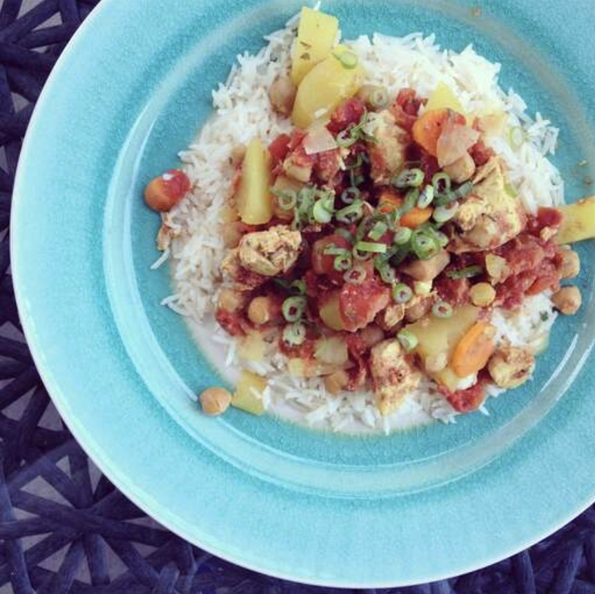

Chicken Marrakesh

Description
This Moroccan-style chicken is loaded with spices, beans, and veggies that make it a great dish served over rice. This recipe is versatile — you can substitute red peppers, zucchini, etc., for the other vegetables.
Ingredients
- 2 pounds skinless, boneless chicken breast halves, cut into 2-inch pieces
- 2 large sweet potatoes, peeled and diced
- 1 (15 ounce) can garbanzo beans, drained and rinsed
- 1 onion, sliced
- 2 large carrots, peeled and diced
- 2 cloves garlic, minced (Optional)
- 1 teaspoon dried parsley
- 1 teaspoon salt
- 1/2 teaspoon ground cumin
- 1/2 teaspoon ground turmeric
- 1/2 teaspoon ground black pepper
- 1/4 teaspoon ground cinnamon
- 1 (14.5 ounce) can diced tomatoes
Steps
- Place chicken, sweet potatoes, garbanzo beans, carrots, onion, and garlic into a slow cooker.
- Mix parsley, salt, cumin, turmeric, cinnamon, and pepper together in a small bowl. Sprinkle over chicken and vegetables, then pour in tomatoes and stir to combine.
- Cover and cook on High until sweet potatoes are tender and sauce has thickened, 4 to 5 hours.